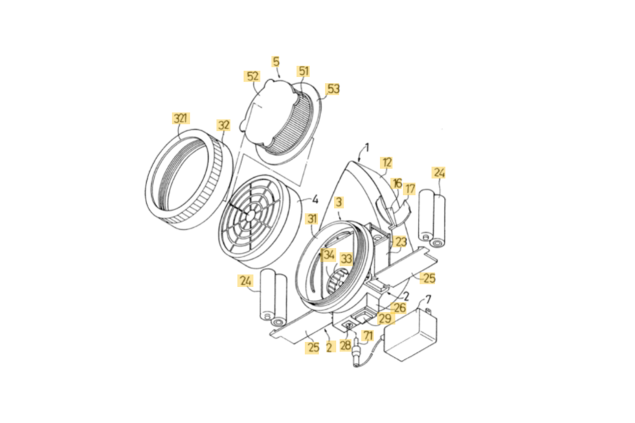

High Precision Auto-Assembly Equipment
for Gas Mask Filter
IUR (Industry-University-Research) Program
Taizhou Vocational and Technical College
Advisor
Prof. Yizhi Ying
Why for automation?
Nowadays, the market demand for respiratory protective masks is increasing, and the quality of products is becoming higher and higher, which brings infinite vitality and new challenges to the personal protection market.
In recent years, with the continuous introduction and absorption of new products, the design level of gas masks in China has been greatly improved. However, the production technology level of gas mask is still in a low stage, especially the assembly of gas mask basically follow the traditional manual assembly method.
Traditional manual assembly method has many defects, such as high labor intensity, low production efficiency, low level of safety essence and unstable quality.
The research objective of this project is to develop a High Precision Auto-Assembly Equipment for Gas Mask Filter.
The equipment is expected to realize the centralized feeding, automatic installation, automatic weighing, automatic pressing, automatic transfer, automatic assembly of the specified type of gas mask, as well as the fault alarm, etc.
Additionally, the assembling enviornment should meet the standard of anti-corrosion and relatively closed space requirements.

Filter device (filter tank) is the main accessory of gas mask. It is consisted by upper iron bucket, lower iron bucket, iron net cover, plastic net cover, glass fiber, filter paper, catalyst, potassium permanganate, rubber ring and etc.
The mechanical structure of the assembly system is mainly composed of large turntable assembly sub-system, small turntable assembly sub-system, pneumatic compaction device, upper iron cylinder hydraulic shrinking device, upper and lower iron cylinder hydraulic closing device, etc.
This project is now proposed as one of Honored Industrial Science and Technology Projects of Taizhou in 2020, for optimzing the automatic assembly technology of gas masks, so as to better serve for mask serialization expansion in the near future. Compared with the traditional manual assembly method, the system increase the production efficiency by more than 20 times, and the automatic detection function makes the assembly accuracy and product qualification rate higher than manual assembly.